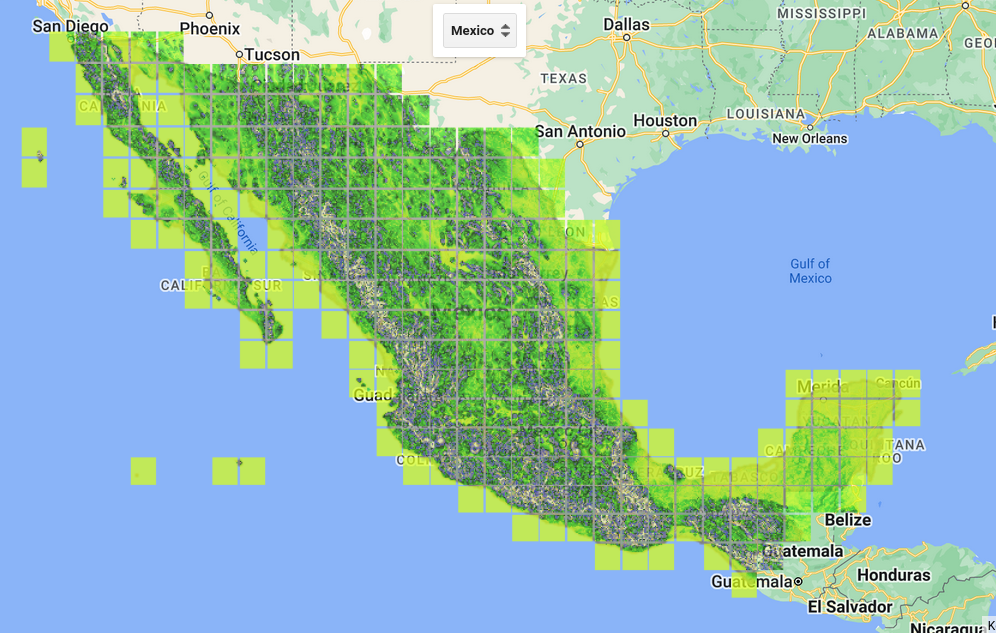

Interactivo
En este post vamos a generar un mapa interactivo, la idea es ver que podemos hacer cosas interactivas dentro de Google Earth Engine (GEE), el pretexto va a ser calcular la pendiente de un conjunto de datos de Modelos Digitales de Elevación (DEM).
Nota
Esto es un ejemplo no se recopmienda usar para hacer calculos reales ni importantes, aunque nos muestra cosas que tiene sentido las unidades de los resultados pueden no ser confiable.
La idea
La escases de agua es un problema a nivel mundial, el agua es de importancia vital para casi todas las atividades humanas. Por lo tanto es necesario tener un manejo adecuado del recurso y tener las mejores condiciones para su aprovechamiento. Una de las problemáticas con respecto al manejo de agua es el manejo de los acuiferos subterraneos y la recarga de los mismos.
La pendiente del terreno, es un elemento que se tiene que tener en consideración para determinar la zonas en las cuales podrian ser consideradas como zonas de recarga de los acuiferos. Un terreno con mucha pendiente generá que la velocidad del agua en la superficie sea alta, impidiendo que el agua se mantenga en una zona evitando la absorción en el subsuelo.
La idea es tomar a los paises y visualizar la pendiente en todo su territorio. Vamos a definir, los valores de la pendiente para determinar si el suelo tiene un buen potencial de recarga, la clasificación reportada es distinta en la literatura y esta depende del tipo de suelo, por lo cual, no hay un consenso entre los autores en la literatura el número de tipos de pendiente ni los valores respectivos. Aunque, si hay cierto consenso en que menos de \(14-17\%\) es necesario para permitir que el agua se permee a los mantos acuiferos. En este caso vamos a tomar la siguiente definición.
| Pendiente | Valor |
|---|---|
| 0 - 3.15 | Muy bueno |
| 3.16 - 7.87. | Bueno |
| 7.88 - 14.87 | Regular |
| 14.87 - 44 | Malo |
| 44 - | Pesimo |
Ahora veamos como podemos hacer un mapa donde mostremos la pendiente en las distintas regiones y que la tomar un país en partícular nos muestre la pendiente. Utilicemos el conjunto de datos de los DEMs de Copernicus que se encuentran dentro de GEE la cual nos de a una covertura global de las elevaciones a nivel global. Se utiliza la banda DEM que se encuentra dentro de todas las imágenes.
var dataset = ee.ImageCollection('COPERNICUS/DEM/GLO30');
var elevation = dataset.select('DEM');
var worldcountries = ee.FeatureCollection('USDOS/LSIB_SIMPLE/2017');
var country = worldcountries.filter(ee.Filter.eq('country_na', 'Mexico'));
var palettes = require('users/gena/packages:palettes');Las siguientes declaraciones son simplemente la coleccion de los polígonos de los paises, una varialbe global llamada country que contendrá nuestro país seleccionado, las paletas de colores disponibles.
Para poder obtener la pendiente vamos a usar la función ee.Terrain.slope la cual calcula la pendiente en los DEMs. Como la función obtiene la pendiente haciendo uso de los vecinos de cada pixel. Entonces, cuando el pixel no tenga sus 4 vecinos por aristas, no podrá obtener el valor de la pendiente en dicho pixel. Esto ocasiona que en los bordes de las imágenes no se pueda calcular un valor.
La función ee.Terrain.slope sólo funciona en imágenes, por tal motivo es necesario envolver la función para aplicarla a cada elemento de la nuestra colección de Imagenes (ImageCollection) y mapear dicha función usando el metodo .map
///Calculate the slope of the country Geometry
var slope_wrap = function(image){
var slope = ee.Terrain.slope(image).clip(country).rename('Slope');
return slope;
};Esta función toma una imagen y calcula la pendiente en dicha imagen, despues se queda con las partes de la imagen que se encuentran dentro de la geometría de country y cambia el nombre de la banda.
Aplicamos la función a nuestra colección de imágenes y se almacena en la variable slope_country_in.
var slope_country_in= dataset.filterBounds(country).select('DEM').map(slope_wrap);Aquí se hace notar, que antes de aplicar la función ‘slope_wrap’, lo que se hace es tomar las imágenes que tocan a la geometría de country (polígono) y seleccionar la banda DEM. Esto evita hacer cálculos inecesarios y en ciertas ocasiones puede disminuir los tiempos de cómputo para obtener el resultado final.
Una vez obtenido la imagen de las pendientes, entonces podemos filtrarlas usando los valores de la pendiente. Creamos un filtor por cada tipo de pendiente.
var filter_vgood= function(image){
return image.updateMask(image.lte(3.15)).rename('vgood');
};
var filter_good= function(image){
return image.updateMask(image.gt(3.15).and(image.lte(7.87))).rename('good');
};
var filter_poor= function(image){
return image.updateMask(image.gt(7.87).and(image.lte(14.87))).rename('regular');
};
var filter_vpoor= function(image){
return image.updateMask(image.gt(14.88).and(image.lte(44.6))).rename('poor');
};
var filter_vpoor= function(image){
return image.updateMask(image.gt(44.6).and(image.lte(90))).rename('vpoor');
};A continuacion vamos a definir los parámetros de distintas visualizaciones que podriamos hacer. Aunque no se utilizan todas en el scrip final.
var elevationVis = {
min: 0.0,
max: 3000.0,
palette: ['0000ff','00ffff','ffff00','ff0000','ffffff'],
};
var slopeVgood = {
min: 0,
max: 3.15,
palette: palette_vgood,
opacity:0.7
};
var slopegood = {
min: 3.16,
max: 7.87,
palette: palette_good,
opacity:0.7
};
var sloperegular = {
min: 7.88,
max: 14.87,
palette: palette_poor,
opacity:0.7
};
var slopepoor = {
min: 14.87,
max: 44.6,
palette: palette_vpoor,
opacity:0.7
};
var slopeVpoor = {
min: 44.87,
max: 90,
palette: palette_vpoor,
opacity:0.7
};Vamos hacer una función para que haga todo cada vez que lo necesitemos, la función usa como parametro el string del nombre del pais que deseamos visualizar. Se obtiene el poligono del pais y se filtran las imagenes para solo tener las imagenes que se encuentran dentro del la regiön de interes. Se almacenan dentro de de la variable slope_country_in.
Utilizando la coleccion de imagenes filtradan se enmascaran los pixeles de las imágenes usando los filtros antes definidos y se almacenan en las variables slope_good_mask_in, slope_vgood_mask_in, slope_poor_mask_iny slope_vpoor_mask_in. Se hacen las respectivas capas para cada una de las direfentes tipos de pendienter las cuales usan las escalas de colores que se definieron con anterioridad. Estas capas junto con una capa del poligono del país seleccionado se añaden al mapa y se centran en el poligono del pais selecionado haciendo un sum de \(5\).
function redraw(name_country){
print('Pais:',name_country);
// se seleccionan el pais y las imagenes dentro del pais
country = worldcountries.filter(ee.Filter.eq('country_na', name_country));
var slope_country_in= dataset.filterBounds(country).select('DEM').map(slope_wrap);
/// se enmascaran los pixeles de las imagenes con los distintos tipos de pendientes
var slope_good_mask_in = slope_country_in.map(filter_good);
var slope_vgood_mask_in = slope_country_in.map(filter_vgood);
var slope_poor_mask_in = slope_country_in.map(filter_poor);
var slope_vpoor_mask_in = slope_country_in.map(filter_vpoor);
/// se definen las capas
lay_pais = ui.Map.Layer(country,{color:'gray', opacity:0.8}, 'Pais');
lay_vgood = ui.Map.Layer( slope_vgood_mask_in, slopeVgood, 'Very Good slope' );
lay_good = ui.Map.Layer( slope_good_mask_in, slopegood, 'Good slope' );
lay_poor = ui.Map.Layer( slope_poor_mask_in, slopepoor, 'Poor slope' );
lay_vpoor = ui.Map.Layer( slope_vpoor_mask_in, slopeVpoor , 'Very Poor slope' );
//// añade capas al mapa interactivo
Map.centerObject(country, 5);
Map.layers().reset();
Map.layers().set(0, lay_pais);
Map.layers().set(1, lay_vgood);
Map.layers().set(2, lay_good);
Map.layers().set(3, lay_poor);
Map.layers().set(4, lay_vpoor);
}Ya hicimos todo pero os falta hacer a el mapa interactivo, para esto vamos a obtener la lista de paises que se desean seleccionar, en este caso vamos a utilizar la lista completa de paises disponibles.
var names = worldcountries.aggregate_array('country_na').sort();Lo que pedimos es que a partir del conjunto de datos worldcountries agregue de forma ordenada los datos que se encuentra en el campo country_na.
Vamos a añadir un boton para seleccionar el pais usando ui.Select donde las cosas a seleccionar son la lista de paises las cuales al ser seleccionados lo pasaran como parámetro a la función redraw. Activando la ejecuciön de la funcion, generando las capas de las pendientes y la capa del pais, las cuales se añaden al mapa. Todo se realiza dentro de la funciön redraw.
var select = ui.Select({items: names.getInfo(), onChange: redraw });
select.setPlaceholder('Select country'); Solo nos falta agregar el boton al mapa. Esto se realiza en la siguiente linea de codigo donde al mapa se le añade el objeto selectel cual contiene el boton.
Map.add(select);Y nos queda de la siguiente forma:

Se puede mejorar la visualización recortando las imágenes a sólo la región determinada por el polígono del país. Pero eso lo dejamos como ejercicio al lector.
El scrip completo se puede ejecutar desde GEE en el siguiente link